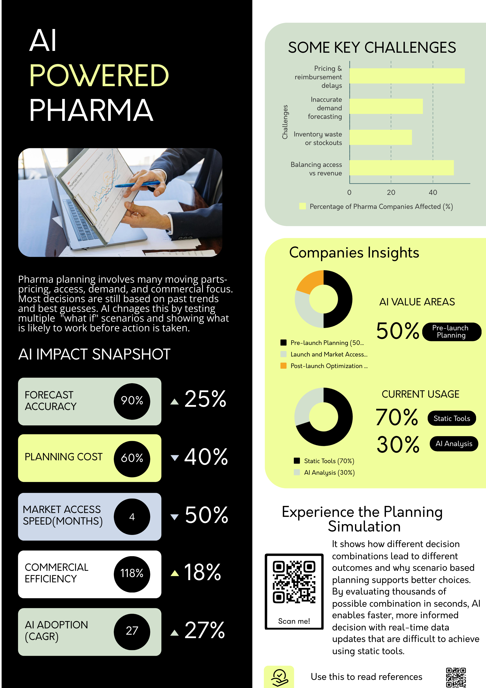

AI | Healthcare | Behavioral Science
```Exploring how artificial intelligence combined with behavioral science transforms healthcare into adaptive, real-time decision systems that improve forecasting, patient engagement, and system-level responsiveness.
Problem: Traditional pharma planning relies heavily on historical data and static models, leading to inaccurate demand forecasting, inefficient resource allocation, and delayed market access.
Approach: Developed an AI-based simulation framework to evaluate multiple “what-if” scenarios across pricing, demand, and access strategies in real time.
Key Insights:
Analysis: The shift from static forecasting to dynamic scenario simulation enables proactive decision-making, allowing organizations to anticipate outcomes rather than react.
Impact: Enables pharma companies to move from reactive planning to predictive, data-driven strategy execution, improving both efficiency and patient access.

```Problem: Traditional research methods such as surveys capture only a single moment and fail to reflect dynamic human behavior influenced by trust, misinformation, and social context.
Approach: Designed a conceptual system combining AI with behavioral science:
Key Insight: Human behavior evolves continuously and cannot be effectively captured using static tools.
Analysis: Integrating behavioral science with AI allows systems to transition from passive observation to active adaptation through continuous feedback loops.
Impact: Enables scalable, personalized, and adaptive healthcare interventions that are more effective and human-centered.